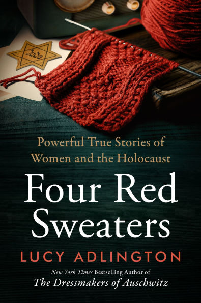
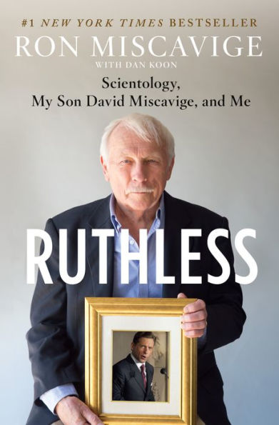
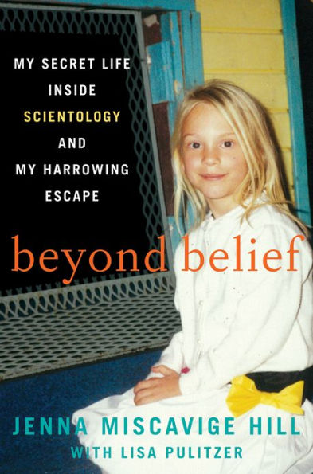
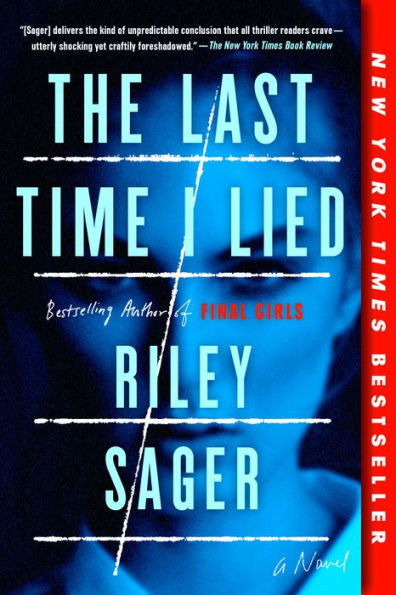
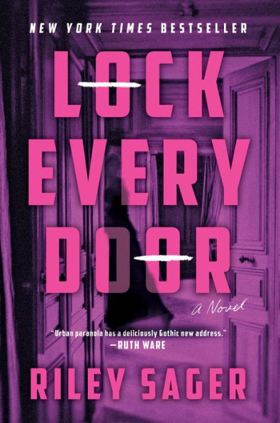
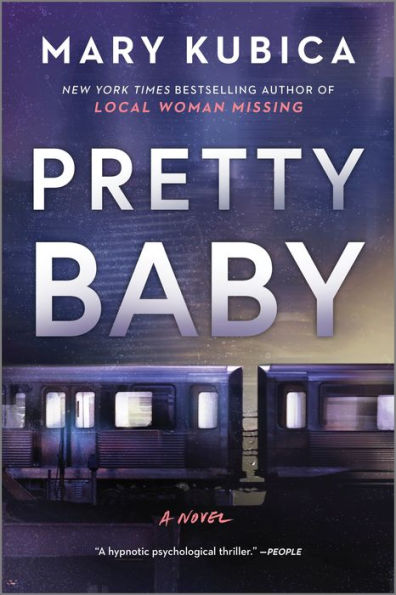
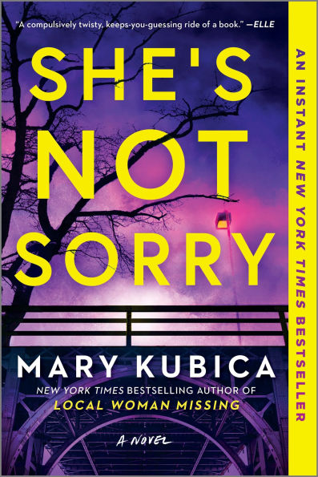
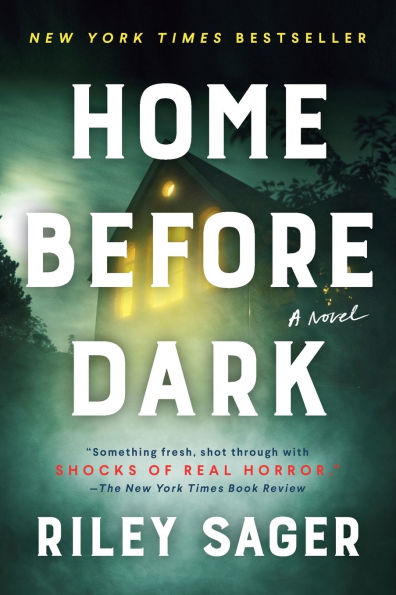
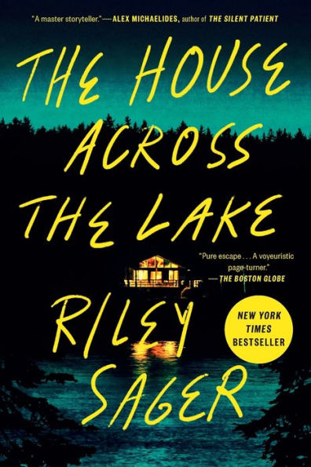
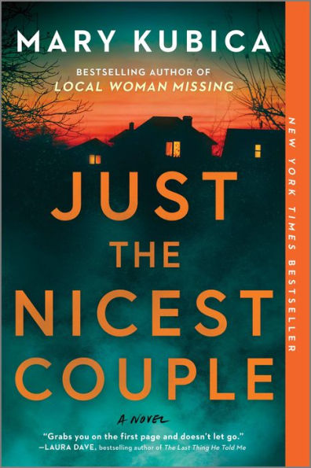

Below are the books I intend to read within the next month. They are organized by Genre, not in the order I will read them. I tend to read multiple Holocaust books in a row with a different genre book in between.
- "The Holocaust An Unfinished Story" by Dan Stone
- "We Are Witnesses" by Jacob Boas
- "Four Red Sweaters" by Lucy Adlington
- "Jews in the Garden" by Judy Rakowsky
- "Ruthless" by Ron Miscavige
- "Beyond Belief" by Jenna Miscavige Hill
- "Last Time I Lied" by Riley Sager
- "Lock Every Door" by Riley Sager
- "Pretty Baby" by Mary Kubica
- "She's Not Sorry" by Mary Kubica
- "Home Before Dark" by Riley Sager
- "House Across the Lake" by Riley Sager
 "It's Not Her" by Mary Kubica
"It's Not Her" by Mary Kubica
- "Just the Nicest Couple" by Mary Kubica